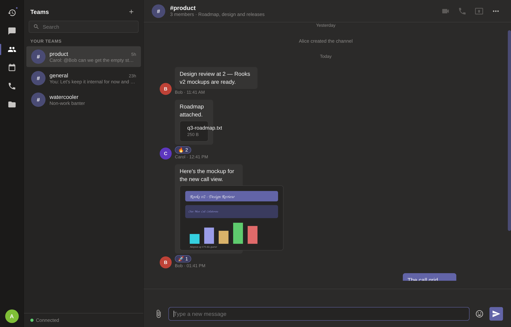
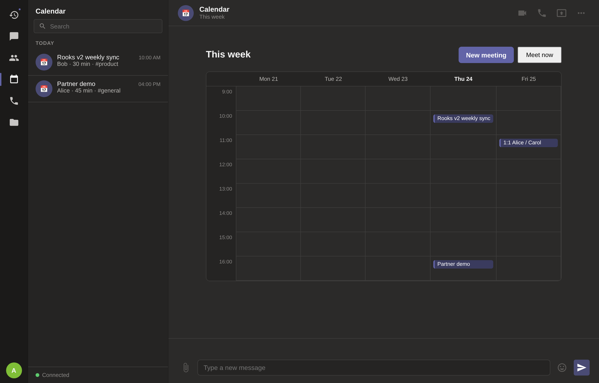

In development · Web · Self-hosted
Message teammates one-to-one with live presence, so you always know who's around. Conversations persist and reload the moment you reconnect.
Start an audio or video meeting straight from any conversation. Calls are peer-to-peer over WebRTC, so media goes between people — not through a third party.
Present a slide, a build or a tricky bug in one click, and switch back to your camera when you're done.
See who's online at a glance. When someone joins or leaves, presence updates instantly across the team.
Run the whole thing on a box you control. No cloud dependency, no vendor in the middle, no seat you have to buy.
A compact Deno server and a static client — easy to read, easy to run, easy to make your own.

Create a channel for each team or topic and keep the noise out of everyone's inbox.
React with an emoji, reply in context, and edit or delete your own messages.
Pull in a teammate with an autocomplete mention — it lands straight in their activity feed.
Drag, drop or paste a document or screenshot; files and images preview right in the conversation.
Find any message across every chat and channel, and jump straight to it.
Mentions, replies and missed calls collected in one place, so nothing slips past.
Available, busy, do-not-disturb or away — with a custom status message.
See when a message is seen, and who's typing right now.
Pin the decisions and links a channel needs to keep at hand.
Schedule a meeting to a channel and it appears on the week view for everyone.

One small Deno server hosts the client and relays messages between people.
Teammates visit the address and enter a display name. That's the whole sign-up.
Chat one-to-one, start an audio or video call, or share your screen — all in the same window.
| A typical team suite | Rooks | |
|---|---|---|
| Where it runs | Their cloud | Your server |
| Sign-up | Accounts and profiles | Just a display name |
| Pricing | Monthly, per seat | No per-seat fees |
| Ads & tracking | Often | None |
| Your conversations | On their servers | On yours |
| Calls | Routed through a service | Peer-to-peer WebRTC |
Rooks is early. It is honest about that — chat, presence, calls and screen sharing work today; a fuller collaboration suite is on the roadmap.
No. You enter a display name and you're in — no email, no password, no profile to fill out.
On the server you run. There is no Cherishvale-hosted service and no third party holding your conversations.
No — and it doesn't pretend to. Rooks is for real-time collaboration, so it needs the server reachable. (Our other apps, like Planetary Explorer and Resera, are the fully offline ones.)
WebRTC. Audio, video and screen share connect peers directly, so the media itself doesn't pass through a central server.
Rooks runs on your infrastructure. Messages are relayed by the server you host; calls are peer-to-peer. There are no ads, no analytics and nothing phoning home to us — because there is nowhere for it to phone.